철도신호산업기사 (2009-05-10 기출문제)
1과목: 전자공학
1. 다음 중 발진회로에서 주파수 변동의 주 요인에 속하지 않는 것은?
- 부하의 변동
- 주위 온도의 변화
- 전원 전압의 변동
- 완충증폭기의 영향
(정답률: 72%)

2. 다음 중 P형 반도체를 만드는 불순물 원소가 아닌 것은?
- B
- Al
- As
- Ca
(정답률: 57%)
3. 다음 중 이상적인 연산증폭기의 특징으로 적합하지 않은 것은?
- 입력임피던스가 무한대이다.
- 주파수 대역폭이 무한대이다.
- 입력 오프셋 전압이 무한대이다.
- 오픈 루프 전압 이득이 무한대이다.
(정답률: 75%)
4. 5[kHz]의 신호주파수로 80[MHz]의 반송파를 FM 변조했을 때 최대 주파수 편이가 415[kHz]이면 점유 주파수 대역폭은 몇 [kHz] 인가?
- 15[kHz]
- 180[kHz]
- 320[kHz]
- 490[kHz]
(정답률: 57%)
5. 8진수 347(8)을 10진수로 표현하면?
- 96
- 160
- 191
- 231
(정답률: 80%)
6. 다음 중 디지털 IC의 설계시 유의하여야 할 사항에 속하지 않는 것은?
- 스위칭 시간
- 잡음 여유도
- 팬 아웃
- 내부 발진 주파수
(정답률: 54%)
7. 다음 중 정류기의 평활회로에 사용되는 필터는?
- 대역 소거 필터
- 다역 통과 필터
- 고역 통과 필터
- 저역 통과 필터
(정답률: 60%)
8. 다음과 같은 연산 증폭회로의 역할은?
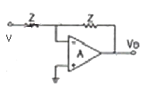
- 감산기
- 부호변환기
- 단위이득 플로어
- 진압 전류 변환기
(정답률: 79%)
9. 증폭기의 이득이 40[dB]이고, 왜율이 10[%]일 때 궤환율 B=0.09의 부궤환을 걸어주면 왜율은 몇 [%]인가?
- 0.5[%]
- 1[%]
- 1.5[%]
- 2.5[%]
(정답률: 63%)
10. 다음 중 정류회로에서 핵동률을 적게 하기 위한 방법으로 가장 적합한 것은?
- 반파 정류회로를 사용한다.
- 교류입력 주파수를 낮게 한다.
- 평활용 곤덴서의 용량을 크게 한다.
- 평활용 최대 코일의 인덕턴스를 작게 한다.
(정답률: 77%)
11. 어떤 차동증폭기의 차등이득이 20000°이고 동상이득은 0.2일 때 동정신호 제거비는 몇 [dB]인가?
- 80[dB]
- 100[dB]
- 120[dB]
- 140[dB]
(정답률: 72%)
12. 다음 회로에서 스위치 S를 5초 동안 on, 45초 동안 off의 동작을 지속적으로 반복하였을 경우 저항 R의 양단에 발생하는 전압 파형의 듀티 사이클은 얼마인가?
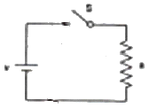
- 0.02
- 0.1
- 0.4
- 0.9
(정답률: 63%)
13. JFET회로에서 IDSS=3[mA], VP=-2.4[V]일 때 VDS=-0.7[V]에서 드레인 전류 IP는 약 몇 [mA]인가?
- 5[mA]
- 3[mA]
- 1.5[mA]
- 0.5[mA]
(정답률: 60%)
14. 다음 중 반도체의 도진성에 대한 설명으로 적합하지 않은 것은?
- P형 반도체의 반송자는 대부분 정공이다.
- P형 반도체의 반송자는 대부분 접지이다.
- 진성 반도체의 반송자는 전자가 정공보다 많다.
- 전자와 겅공 중에서 많은 쪽의 반송자를 다수 반송자라 한다.
(정답률: 65%)
15. AM 변조와 FM 변조를 비교할 때 FM 변조의 가장 큰 장점은 무엇인가?
- 적은 신호의 진폭
- 수신 잡음이 적음
- 높은 반송파 주파수
- 작은 주파수 대역폭
(정답률: 75%)
16. 다음 중 FET에 대한 설명으로 적합하지 않은 것은?
- BJT 보다 잡음이 적다.
- 전압체어항 트랜지스터이다.
- BJT 보다 이득대역폭 적이 크다.
- BJT 보다 온도변화에 따른 안정성이 높다.
(정답률: 50%)
17. 다음 회로에 대한 설명으로 적합하지 않은 것은? (단, 전압이득은 1 이라고 한다.)
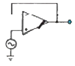
- 전압 플러어이다.
- 입력전압과 출력전압은 그 크기가 같다.
- 입력전압과 출력전압은 역상이다.
- 입력임피던스가 무한대, 췌환 저항은 0 이다.
(정답률: 54%)
18. 이미터 저항을 가진 이미터 접지 증폭기에서 이미터 저항과 병렬로 연결된 바이패스 콘덴서를 제거할 때 발생하는 현상으로 가장 적합한 것은?
- 왜율이 증가한다.
- 잡음이 증가한다.
- 전압이득이 감소한다.
- 주파수 대역폭이 감소한다.
(정답률: 58%)
19. 다음 중 진폭과 부상을 변화시켜 정보를 전달하는 디지털 변조 방식은?
- PSK
- QAM
- ASK
- FSK
(정답률: 77%)
20. 다음 중 비정현파 발진회로가 아닌 것은?
- LC 발진회로
- 멀티바이브레이터
- 블로킹 발진기
- 톱니파 발진기
(정답률: 72%)
2과목: 신호기기
21. 반도체 사이리스터에 의한 주파수 제어는 어느 것을 변화시키는가?
- 주파수
- 위상각
- 최대값
- 토크
(정답률: 65%)
22. 반파정류 회로에서 직류전압 200[V]를 얻는데 필요한 변압기 2차 전압은 약 몇 [V]인가? (단, 부하는 순저항이고, 정류기의 전압강하는 15[V]임)
- 400
- 478
- 512
- 642
(정답률: 69%)
23. 직류 직권 진동기의 전원 극성을 반대로 하면 회전방향은?
- 정지한다.
- 반대로 된다.
- 변하지 않는다.
- 과속으로 된다.
(정답률: 59%)
24. KS형 전기 선로전환기에서 감속기어 장치에 해당 되지 않는 것은?
- 마찰클러치
- 중간기어
- 쇄정자
- 전환기어
(정답률: 74%)
25. 전압의 변환 기기가 아닌 것은?
- 변압기
- 컨버터
- 인버터
- 유도전동기
(정답률: 79%)
26. 건널목 전동차단기에 대하여 맞지 않는 것은?
- 정격값은 DC 24[V]이다.
- 기기의 조정범위에서 기동전류는 80[A] 이상으로 한다.
- 정지할 때에는 차단봉에 충격을 주지 않게 회로제어기를 조정한다.
- 제어전압은 정격값의 0.9~1.2배로 한다.
(정답률: 62%)
27. 직류기 정류 작용에서 전압 정류의 역할을 하는 것은?
- 보상권선
- 보극
- 탄소브러시
- 전기자
(정답률: 72%)
28. 3상 유도전동기의 전원 주파수를 변환하여 속도를 제어하는 경우 전동기의 출력 P와 주파수 t와의 관계는?
- P∞t
- P∞1/t
- P는 t에 무관
- P∞t2
(정답률: 60%)
29. 변압기의 병렬운전 조건 중 틀린 것은?
- %임피던스 강하가 같을 것
- 권수비가 같을 것
- 극성이 같을 것
- 용량이 같을 것
(정답률: 72%)
30. 슬립 4[%]인 유도 전동기의 정지시 2차 1상의 전압이 150[V]이면 운전시 2차 1상 전압[V]은?
- 6
- 7
- 60
- 70
(정답률: 63%)
31. 건널목지장물검지장치의 설치와 관련된 사항이다. 발광기에서 수광기 간의 거리는 몇 [m]이하 이어야 하는가?
- 40
- 45
- 50
- 55
(정답률: 54%)
32. 건널목 경보기에 관한 사항이다. 다음 중 2420형 계전기의 발진주파수로 알맞은 것은?
- 20kHz ± 2kHz 이내
- 40kHz ± 2kHz 이내
- 50kHz ± 4kHz 이내
- 60kHz ± 4kHz 이내
(정답률: 80%)
33. 유도 전동기를 기동하기 위하여 △를 Y로 전환했을 때 토크는 어떻게 되는가?
- △의 1/√3이 된다.
- △의 √3배가 된다.
- △의 1/3이 된다.
- △의 30배가 된다.
(정답률: 60%)
34. 한류 장치로 직류 궤도 회로에서는 가변저항기가 사용되고 있다. 다음 중 교류 궤도회로의 한류 장치로 알맞은 것은?
- 레일본드
- 리액터
- 축전지
- 계전기
(정답률: 67%)
35. 다음의 각 계전기에 따른 용도에 틀린 것은?
- 과전류계전기 : 기구·회로의 단락 또는 과부하 보호용
- 부족전압계전기 : 회로의 부족 전압 보호용
- 비율자동계전기 : 변압기의 내부고장 보호용
- 역상계전기 : 기기·회로의 지락 보호용
(정답률: 72%)
36. 전동차단기에서 전동기의 클러치 조정은 차단봉 교체 시 시행하여야 하며 전동기 슬립 전류는 몇 [A] 이하로 하여야 하는가?
- 5
- 10
- 15
- 20
(정답률: 65%)
37. 건널목 전동차단기에서 사용하는 전동기로서 가장 많이 사용하는 전동기는?
- 직류직권전동기
- 직류분권전동기
- 직류가동복원전동기
- 직류차등복원전동기
(정답률: 72%)
38. 교류 전원의 우접점 확보가 가능한 지역인 비전철 구간이나 직류전철 구간에 많이 사용하는 궤도 회로는?
- 코드 궤도 회로
- 정류 궤도 회로
- A.F 궤도 회로
- 교류 궤도 회로
(정답률: 50%)
39. 다음 중 2440형 건널목 제어자의 회로구성 방식은?
- 궤도회로식
- 개전로식
- 폐전로식
- 절충식
(정답률: 65%)
40. 전부하에서 동손이 270[W], 참손이 120[W]인 변압기가 최대 효율을 나타내는 부하[%]는 약 얼마인가?
- 20.3
- 33.3
- 44.4
- 66.7
(정답률: 40%)
3과목: 신호공학
41. 다음 중 열차자동제어장치(ATC)의 기능이 아닌 것은?
- 차상간 고장 감지
- 각 구간의 열차 감지
- 신호정보 전송기능
- 제한속도 내 유지기능
(정답률: 62%)
42. 궤도회로의 사구간은 부득이 한 경우에 몇 m 이하로 하여야 하는가?
- 7
- 8
- 9
- 10
(정답률: 87%)
43. 갑과 을의 취급버튼 상호간에 쇄정하는 갑의 취급버튼을 정위로 복귀하여도 을의 취급버튼은 일정 시간이 경과할 때까지 해정되지 않는 것은?
- 시간쇄정
- 보류쇄정
- 진로쇄정
- 철사쇄정
(정답률: 69%)
44. 다음 그림과 같은 방법으로 구성한 궤도회로는?
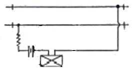
- AF 궤도회로
- 개전로식 궤도회로
- 3위식 궤도회로
- 폐전로식 궤도회로
(정답률: 79%)
45. 3위식 3현시 신호기의 현시 방법으로 옳은 것은?
- 진행, 경계, 정지
- 진행, 주의, 정지
- 진행, 감속, 정지
- 진행, 경계, 감속
(정답률: 85%)
46. 다음 중 열차종합제어장치(TTC)의 기능이 아닌 것은?
- 열차의 진로를 제어한다.
- 열차의 diagram을 작성한다.
- 입환스케줄을 자동으로 입력한다.
- 운행 열차를 추적하여 표시 및 모니터한다.
(정답률: 77%)
47. 열차자동정지장치(ATS) 지상자의 코일의 인덕턴스가 0.3mH이고 콘덴서의 용량이 0.0⑤㎌이다. 공진주파수는 약 몇 kHz인가?
- 98
- 110
- 122
- 130
(정답률: 75%)
48. 신호설비 도식기호 중 “케이블헷드”를 나타내는 것은?
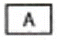
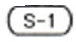
(정답률: 82%)
49. 보수자 선로횡단장치의 최소 제어거리는 몇 m로 하는가?
- 950m
- 1360m
- 1660m
- 1950m
(정답률: 70%)
50. ATS-S형 지상자의 선택도(Q)를 바르게 표현한 것은? (단, R은 회로의 저항, L은 인덕턴스, C는 커패시턴스이다.)
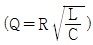
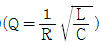
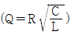
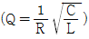
(정답률: 54%)
51. 다음 중 확보하여야 할 확인거리가 100m 이상인 신호기에 해당되는 것은?
- 입환신호기
- 중계신호기
- 원방신호기
- 유도신호기
(정답률: 79%)
52. 우리나라 고속철도의 안전설비 중 기상검지장치에 해당되지 않는 것은?
- 강우량검지장치
- 적설량검지장치
- 풍속·풍량검지장치
- 번개검지장치
(정답률: 80%)
53. 연동장치의 연쇄 기준이 아닌 것은?
- 신호기와 신호기
- 궤도회로와 궤도회로
- 신호기와 선로전환기
- 선로전환기와 선로전환기
(정답률: 79%)
54. 건널목 경보기의 설치 및 보수 기준으로 옳지 않은 것은?
- 경보등의 타종수는 기당 매분 70~100회이다.
- 경보등의 단자전압은 정격값의 0.8~0.9배이다.
- 경보등의 점멸횟수는 등당 매분 40±10회이다.
- 경보음량은 경보기 1m 전방에서 60~130dB이다.
(정답률: 83%)
55. 무정전전원장치(UPS)의 주요 구성기기가 아닌 것은?
- 축전지
- 정류기
- 변류기
- 인버터
(정답률: 95%)
56. 역간 평균 열차 운행시간이 4.5분이고 폐색취급시간이 1.5분일 경우 선로이용률이 0.7인 단선구간의 선로용량은?
- 168회
- 192회
- 240회
- 384회
(정답률: 75%)
57. 다음 중 전기선로전환기의 공회전이 발생하는 경우가 아닌 것은?
- 휴즈가 단선되었을 경우
- 쇄정간 홈과 쇄정자가 불일치할 경우
- 선로전환기 첨단에 이물질이 삽입된 경우
- 선로전환기와 첨단간 취부 위치가 틀릴 경우
(정답률: 94%)
58. 원격제어장치와 CTC 괸제설비에 공급되는 전원 전압을 특별히 정한 것을 제외하고는 정격전압의 몇 % 이내로 하도록 규정하고 있는가?
- ±1%
- ±2%
- ±5%
- ±10%
(정답률: 72%)
59. 고속철도에 설치된 안전설비 중 안전측 동작시 ATC 속도제어와 가장 관련있는 설비는?
- 터널경보장치
- 기상검지장치
- 끌림검지장치
- 레일온도검지장치
(정답률: 74%)
60. 운전시격의 정의로 옳은 것은?
- 1일 편도 최소열차 운용횟수
- 1일 편도 최대열차 운용횟수
- 고속열차와 저속열차간의 상호 운행 선로용량
- 선행열차와 후속열차간의 상호 운행 간격 시간
(정답률: 77%)
4과목: 회로이론
61. 8[Ω]인 저항과 6[Ω]의 용량 리엑턴스 직렬회로에 E=28-j4[V]인 전압을 가했을 때 흐르는 전류는 몇 [A]인가?
- 3.5 - j0.5[A]
- 2.48 + j1.36[A]
- 2.8 - j0.4[A]
- 5.3 - j2.21[A]
(정답률: 47%)
62. 다음과 같은 회로에서 t=0인 순간에 스위치 S를 닫았다. 이 순간에 인덕턴스 L에 걸리는 전압은? (단, L의 초기 전류는 0 이다.)
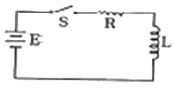
- 0
- E
- LE/R
- E/R
(정답률: 65%)
63. 다음과 같은 회로에서 a, b 양단의 전압은 몇 [V]인가?
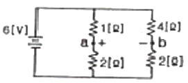
- 1[V]
- 2[V]
- 2.5[V]
- 3.5[V]
(정답률: 59%)
64. 테브난의 정리를 사용하여 다음의 (a)회로를 (b)와 같은 등가 회로로 바꾸려 한다. V[V]와 R[Ω]의 값은?
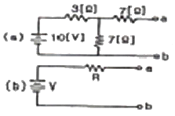
- 7[V], 9.1[Ω]
- 10[V], 9.1[Ω]
- 7[V], 6.5[Ω]
- 10[V], 6.5[Ω]
(정답률: 65%)
65. 어느 회로에서 전압과 전류의 실효값이 각각 60[V]이고, 역률이 0.8일 때 무효전력은 몇 [var]인가?
- 360[var]
- 300[var]
- 200[var]
- 100[var]
(정답률: 67%)
66. 어떤 교류의 평균값이 566[V]일 때 실효값은 몇 [V]인가?
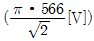
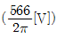
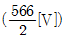
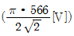
(정답률: 54%)
67. 대칭 6상 기전력의 선간 전압과 상기전력의 위상차는?
- 120°
- 60°
- 30°
- 15°
(정답률: 55%)
68. 저항 R1[Ω], R2[Ω] 및 인덕턴스 L[H]이 직렬로 연결되어 있는 회로의 시정수[s]는?
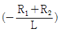
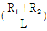
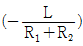
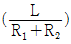
(정답률: 58%)
69. 어떤 회로에서 I=10sin(314t-π/6)[A]의 전류가 흐른다. 이를 복소수로 표시하면?
- 6.12 - j3.54[A]
- 17.32 - j5[A]
- 3.54 - j6.12[A]
- 5 - j17.32[A]
(정답률: 58%)
70. 기본파의 30[%]인 제3고조파와 기본파의 20[%]인 제5고조파를 포함하는 전압파의 외형률은 약 얼마인가?
- 0.21
- 0.33
- 0.36
- 0.42
(정답률: 50%)
71. 위상정수 β=10[rad/km], 위상속도 v=20[m/s]일 때 각주파수 ω는 몇 [rad/s]인가?
- 0.1[rad/s]
- 0.2[rad/s]
- 14.1[rad/s]
- 200[rad/s]
(정답률: 54%)
72. R[Ω]의 3개의 저항을 전압 E[V]의 3상 교류 선간에 그림과 같이 접속할 때 선전류 [A]는 얼마인가?
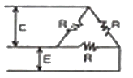
- E/√3R
- √3E/R
- E/3R
- 3E/R
(정답률: 64%)
73. 두 개의 코일 a, b가 있다. 두 개를 직렬로 접속하였더니 합성 인덕턴스가 19[mH] 이었고, 극성을 반대로 접속하였더니 합성 인덕턴스가 11[mH]이었다. 코일의 자기 인덕턴스가 20[mH]라면 결합계수 K는 얼마인가?(오류 신고가 접수된 문제입니다. 반드시 정답과 해설을 확인하시기 바랍니다.)
- 0.6
- 0.7
- 0.8
- 0.9
(정답률: 62%)
74. 접전용량 C만의 회로에서 100[V], 60[Hz]의 교류를 가했을 때 60[mA]의 전류가 흐른다면 C는 몇 [㎌]인가?
- 5.26[㎌]
- 4.32[㎌]
- 3.59[㎌]
- 1.59[㎌]
(정답률: 77%)
75. A, B, C, D 4단자 정수으 관계를 올바르게 나타낸 것은?
- AD + BD = 1
- AB - CD = 1
- AB + CD = 1
- AD - BC = 1
(정답률: 55%)
76. 대칭 3상 Y결선에서 선간전압이 100√3[V]이고 각 상의 임피던스 Z=30 + j40[Ω]의 평형부하일 때 선전류는 몇 [A]인가?
- 2[A]
- 2√3[A]
- 5[A]
- 5√3[A]
(정답률: 63%)
77. 다음과 같은 회로에서 출력전압 V2의 위상은 입력전압 V1보다 어떠한가?
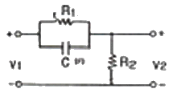
- 같다
- 앞선다
- 뒤진다
- 전압과 관계없다
(정답률: 55%)
78. 다음과 같은 회로의 구동정 임피던스는? (단, ω는 회로의 각 주파수이다.)
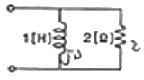
- 2 + jω
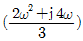
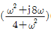
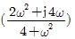
(정답률: 65%)
79. cos ωt의 라플라스 변환은?
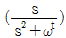
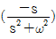
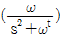
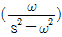
(정답률: 54%)
80. 다음과 같은 전기회로의 입력을 e1, 출력을 e2라고 할 때 전달함수는? (단, T=L/R 이다.)
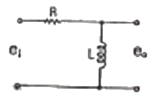
- TS+1
- TS2+1
- 1/TS+1
- TS/TS+1
(정답률: 47%)